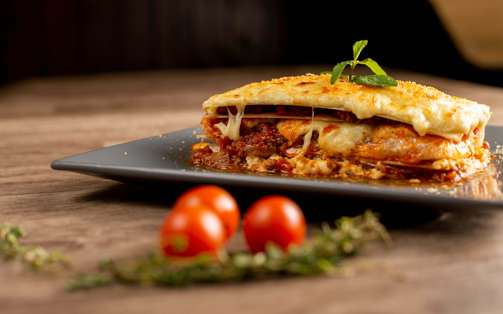

Recipe of Lasagna
Home

Description of Lasagna
Lasagna is a classic Italian baked pasta dish built from alternating layers of wide, flat noodles, rich sauces, and melted cheeses. Originating in the Emilia-Romagna region of Italy, the traditional preparation—known as lasagne alla Bolognese—pairs egg-based pasta sheets with a slow-simmered meat ragù, a creamy white béchamel sauce,and grated Parmigiano-Reggiano. As it bakes in the oven, the pasta absorbs the surrounding moisture while the top layer turns golden and crisp, creating a contrast between tender, savory interiors and bubbling, browned edges.
Beyond its traditional roots, lasagna has adapted into countless regional and global variations. In southern Italy and North America, cooks often swap out the béchamel for ricotta and mozzarella cheeses alongside a bright marinara or tomato-meat sauce. Vegetarian versions frequently feature roasted zucchini, spinach, mushrooms, or eggplant in place of meat, while modern interpretations even experiment with seafood, pesto, or gluten-free noodles, making it a versatile comfort food suited for family gatherings and make-ahead meals.
List of Ingredients
- Lasagna noodles: 12–15 sheets (traditional boiled noodles or oven-ready no-boil sheets)
- Ground meat: 1 to 1.5 lbs (450–680 g) ground beef, Italian sausage, or a 50/50 blend for the sauce
- Yellow onion: 1 medium onion, finely diced, for savory depth
- Garlic: 3–4 cloves, minced, for aromatic flavor
- Crushed tomatoes: 1 can (28 oz / 800 g) as the base of the sauce
- Tomato paste: 1 can (6 oz / 170 g) to thicken and enrich the tomato flavor
- Olive oil: 2 tbsp for browning the meat and aromatics
- Beef broth or dry red wine: ½ cup (120 ml) to deglaze and add richness (optional)
- Ricotta cheese: 15–16 oz (425–450 g) whole-milk ricotta for the creamy filling layer
- Egg: 1 large egg, beaten into the ricotta so the layers hold their shape
- Mozzarella cheese: 3–4 cups (340–450 g) shredded low-moisture mozzarella for melting
- Parmesan cheese: 1 cup (100 g) freshly grated Parmigiano-Reggiano for sharp, salty flavor
- Italian seasoning: 2 tsp dried herbs (or a mix of oregano and basil) for the sauce
- XFresh herbs: ¼ cup chopped fresh basil or flat-leaf parsley for brightness
- Salt and black pepper: To taste, plus a pinch of red pepper flakes or sugar to balance acidity
Steps to make Lasagna Dish
- Make the Meat Sauce:Heat olive oil in a large pot over medium-high heat, then add the ground meat and diced onion, cooking until the meat is browned and no longer pink. Drain any excess fat before stirring in the minced garlic, tomato paste, and dried Italian herbs, cooking for one to two minutes until fragrant. Pour in the crushed tomatoes, broth or wine, salt, and pepper, then bring the mixture to a boil. Reduce the heat to low and let the sauce simmer uncovered for 20 to 30 minutes until it thickens.
- Prepare the Cheese Filling and Pasta:In a medium bowl, stir together the ricotta cheese, beaten egg, half of the grated Parmesan, chopped fresh parsley, and a pinch of salt and pepper until smooth. If you are using traditional lasagna noodles, boil them in salted water for one to two minutes less than the package directions so they stay firm, then drain and lay them flat on parchment paper or lightly coat them with oil to prevent sticking. If you are using oven-ready no-boil noodles, you can skip the boiling step entirely.
- Assemble the LayersPreheat your oven to 375°F (190°C) and spread about one cup of meat sauce evenly across the bottom of a 9x13-inch (23x33 cm) baking dish to keep the pastafrom sticking. Lay down a single layer of noodles, then spread a third of the ricotta mixture over them, sprinkle with shredded mozzarella, and ladle a layer of meat sauce on top. Repeat this sequence of noodles, ricotta, mozzarella, and meat sauce two more times, finishing with a final layer of noodles topped with the remaining sauce and a generous coating of mozzarella and Parmesan.
- Bake and RestCover the baking dish tightly with aluminum foil—tented slightly or sprayed with cooking oil so it does not stick to the cheese—and bake for 25 minutes. Remove the foil and continue baking for another 20 to 25 minutes until the sauce is bubbling around the edges and the cheese turns golden brown. Once out of the oven, let the lasagna rest on the counter for 15 to 20 minutes before slicing so the layers set and hold their shape.